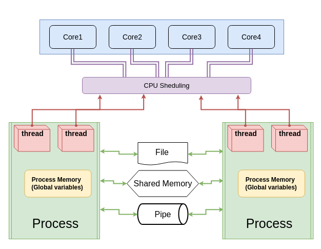

Keyboard shortcuts:
N/СпейсNext Slide
PPrevious Slide
OSlides Overview
ctrl+left clickZoom Element
If you want print version => add '
?print-pdf' at the end of slides URL (remove '#' fragment) and then print.
Like: https://wwwcourses.github.io/...CourseIntro.html?print-pdf
Паралелно Програмиране - лекция 2
Created for

Iva E. Popova, 2021-2022,

Създаване на нишки чрез подклас на Thread
Създаване на нишки чрез подклас на Thread
Защо и Как?
- Можем да управляваме по-финно стратирането на нишки ако създадем наш клас, който да наследява Thread класа.
- Основните стъпки са:
- Създаване на нов подклас на класа Thread.
- Пренаписване на
__init__(self [,args])метода за да добавим собствени аргументи. - Пренаписване на
run(self [,args])метода за да укажем собствена функционалност при стартиране на нишка.
Пример 1
import threading
import time
def print_time(threadName, counter, delay):
while counter:
print("{:10s}: {:s}".format(threadName, time.ctime(time.time())))
time.sleep(delay)
counter -= 1
class myThread(threading.Thread):
def __init__(self, name, delay):
threading.Thread.__init__(self)
self.name = name
self.delay = delay
def run(self):
print(f"Starting {self.name}")
print_time(self.name, 5, self.delay)
print(f"\nExiting {self.name}")
# Create new threads
thread1 = myThread("Thread-1", delay=1)
thread2 = myThread("Thread-2", delay=2)
# Start new Threads
thread1.start()
thread2.start()
# Join new threads
thread1.join()
thread2.join()
print(f"\nExiting Main Thread")
Споделени Ресурси/Критична Секция
Споделени Ресурси/Критична Секция
- Нишките могат да споделят общи глобални променливи (споделени ресурси).
- Критична секция е тази част от код в която се достъпват споделените ресурси.
- Едновременният достъп до споделен ресурс може да доведе до т.нар. Race Condition.
{kind=link}
Критична Секция - Пример
- Имаме 2 нишки и глобален брояч, който се увеличава от всяка една нишка по 10000000 пъти
- В края на процеса, стойността на глобалният брояч би трябвало да е 2*10000000 пъти, но тъй като той е споделен ресурс, виждаме че резултата е непредсказуен.
import threading
import time
def worker():
global counter
for i in range(10000000):
counter += 1
counter = 0
# create some treads to count together:
thread_pool = []
for i in range(2):
tr = threading.Thread(target=worker)
thread_pool.append(tr)
print(f"Counter before start of {tr.name}: {counter}")
tr.start()
# wait for tread to finish:
for tr in thread_pool:
tr.join()
print("Workers counted:", counter)
Критична Секция - Диаграма на проблема

Solution: Lock the critical sections
import threading
import time
def worker():
global counter
# lock the critical section:
lock.acquire()
tmp = counter
print("Before:",counter)
counter = tmp + 1
print("After:",counter)
lock.release()
counter = 0
# create a lock
lock = threading.Lock()
# create some treads to count together:
thread_pool = []
for i in range(10000):
tr = threading.Thread(target=worker)
tr.start()
thread_pool.append(tr)
# wait for tread to finish:
for tr in thread_pool:
tr.join()
print("Workers counted:", counter)
Състояния на нишките и GIL
Състояния на нишките и GIL
Състояния на нишките
- Една нишка може да се намира в едно от съществуващите състояния:
- създадена -нишката е създадена, но не е стартирана;
- стартирана - нишката изпълнява дадената задача;
- блокирана - изпълнява блокиращ метод;
- завършила -“убита”- e приключила своето изпълнение.

Global Interpreted Lock (GIL)
- GIL механизмът в Python не позволява повече от една нишка да работи в даден момент от времето.
- При multithreading нямаме истински паралелизъм а кооперативно изчисление
- Когато една нишка e стартирана тя получава GIL, но когато тя е в състояние на пауза или I/O операции, тя освобождава GIL, който се подава на друга чакаща нишка.

CPU-Bound и I/O-Bound задачи
CPU-Bound и I/O-Bound задачи
- Всяка една задача, решавана от съвременните компютри може да се определи като CPU-Bound или I/O-Bound.
- Разбирайки типа на задачата ще можем да определим по-лесно коя от библиотеките за паралелно програмиране в Python да използваме (threading, multiprocessing, asyncio).
CPU-Bound задачи
- Казваме че една задача е CPU-bound когато времето за нейното изпълнение зависи изключително от бързодействието на процесора.
- Класически пример за такъв тип задачи са тези обвързани с огромни математически изчисления (например: сумата на числата от 0 до 100 милиарда).
- При такива задачи увеличаването на процесорната мощ ще увеличи бързодействието на програмата.
{kind=link}
I/O-Bound задачи
- Когато времето за изпълнение на една задача се определя предимно от входно-изходни (I/O) операции, като четене/запис в големи файлове, се казва че задачата е I/O Bound
- Класически пример за такъв тип задачи са тези свързани с четене/запис в големи файлове; множество HTTP и/или DB заявки към сървъри.
- За да се увеличи бързодействието на програмата при такъв тип задачи е необходимо да се увеличи скоростта на RAM и външната памет, или мрежовата скорост.

Паралелно Програмиране с Процеси
Паралелно Програмиране с Процеси
Характеристики на Процесите
- Всеки процес има собствен сегмент памет, който не може да бъде достъпен от останалите процеси.
- За да могат множество процеси да обменят данни се използват различни техники, известни с общото име Inter process communication
- При стартирането на една Python програма се стартира поне един процес и поне една нишка за главната програма.
- Множество процеси могат да работят едновременно на различни ядра. За разлика от "паралелизмът" чрез нишки, в Python, паралелизмът чрез процеси не е засегнат от GIL.
Характеристики на Процесите
{kind=link}
Модулът Multiprocessing
- multiprocessing е вграден модул в Python чрез който може да разпаралелим програмата си в множество Процеси.
- Процес се създава чрез
Processконструктора. - Веднъж създаден Процесът трябва да бъде стартиран чрез
start()метода - Ако искаме да блокираме работата на процеса, създал даден процес, то е необходимо да изпозлваме метода
join() - API-тата предоставени от
multiprocessingмодула са почти идентични с тези наthredingмодула, което прави използването на Процеси в Python изключително лесно. - Документация: multiprocessing — Process-based parallelism @docs.python.org
Създаване и стартиране на процес - Пример
import multiprocessing as mp
import time
def worker(x):
pid = mp.current_process().name;
print("x = {} in {}".format(x, pid))
time.sleep(2)
if __name__ == '__main__':
# create the process
p = mp.Process(target=worker, args=(42,))
# start the process:
p.start()
# wait until process completes:
p.join()
print("Worker did its job as separate Process!")
Programming guidelines for using multiprocessing
- There are certain guidelines and idioms which should be adhered to when using multiprocessing: Programming guidelines @python3 docs.
- But most important is to make sure that the main module can be safely imported by a new Python interpreter without causing unintended side effects (such as starting a new process)
- I.e. always use
if __name__ == '__main__':when using processes!
References
References
Readings
Videos
- Python Multithreading/Multiprocessing - 6 videos on theme by codebasics